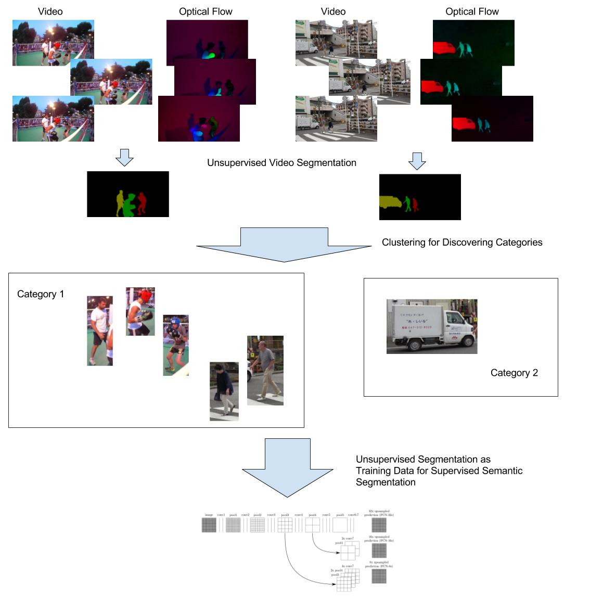

Junchi Liang
I am a fourth year PhD student in the Department of Computer Science at Rutgers University. My advisor is Professor Abdeslam Boularias. Before I came to Rutgers, I obtained a Master degree in computer science at University of Chicago, a Bachelors Degree in computer science at South China University of Technology.
My research interest includes reinforcement learning, deep learning and robotics.
Email: junchi [dot] liang [at] rutgers [dot] edu
Repository
Reinforcement Learning Benchmark
https://github.com/Junchi-Liang/rl_benchmark
Implementation of several modern reinforcement learning algorithms.
Research
Fully Automatic Video Semi-Semantic Segmentation
|  | Video segmentation, detecting objects in pixel level, is a basic step for many visual task as it provides a preliminary understanding of a scence. For instance, in robotics, if we can find out each objects and their categories, it faciliates the analysis of the environment and hence helps robots to reach better policy. Recently, many successful deep learning based method for image semantic segmentation have been proposed. However, all these methods assume categories are given so that training data with semantic labels can be used for supervised learning, which limits their usage on new domains. In order to have a automatic procedure for discovering categories, we look into videos, sequences of images, rather than a single image. In video, we have not only appearance information but also motion information, which can be represented as optical flows. We use several sequences as training data, where we perform unsupervised video segmentation. From this segmentation, we analyse similarity of segmented objects according to both thier appearance and motion, so we can cluster them into categories. With these generated categories, we can convert unsupervised segmentation result into semantically labeled training data, finally we use this generated data to train a semantic segmentation model. |
|---|
Education
PhD student, Rutgers University, Sep. 2016 -
M. S. in Computer Science, University of Chicago, Sep. 2014 - Dec. 2015
B. Eng. in Computer Science and Technology, South China University of Technology, Sep. 2009 - Jul. 2013
Experience
Software Engineering Intern, Facebook, Jun 2015 - Sep 2015
Research Assistant, Sep 2019 -
Teaching Assistant, Sep 2016 - Jul 2019
Teaching
Teaching Assistant, CS214-Systems Programming, Spring 2019
Teaching Assistant, CS314-Principal of Programming Languages, Fall 2018
Teaching Assistant, CS440-Introduction to Artificial Intelligence, Spring 2018
Teaching Assistant, CS344-Design and Analysis of Computer Algorithms, Fall 2017
Teaching Assistant, CS419-Computer Security, Spring 2017
Teaching Assistant, CS344-Design and Analysis of Computer Algorithms, Fall 2016